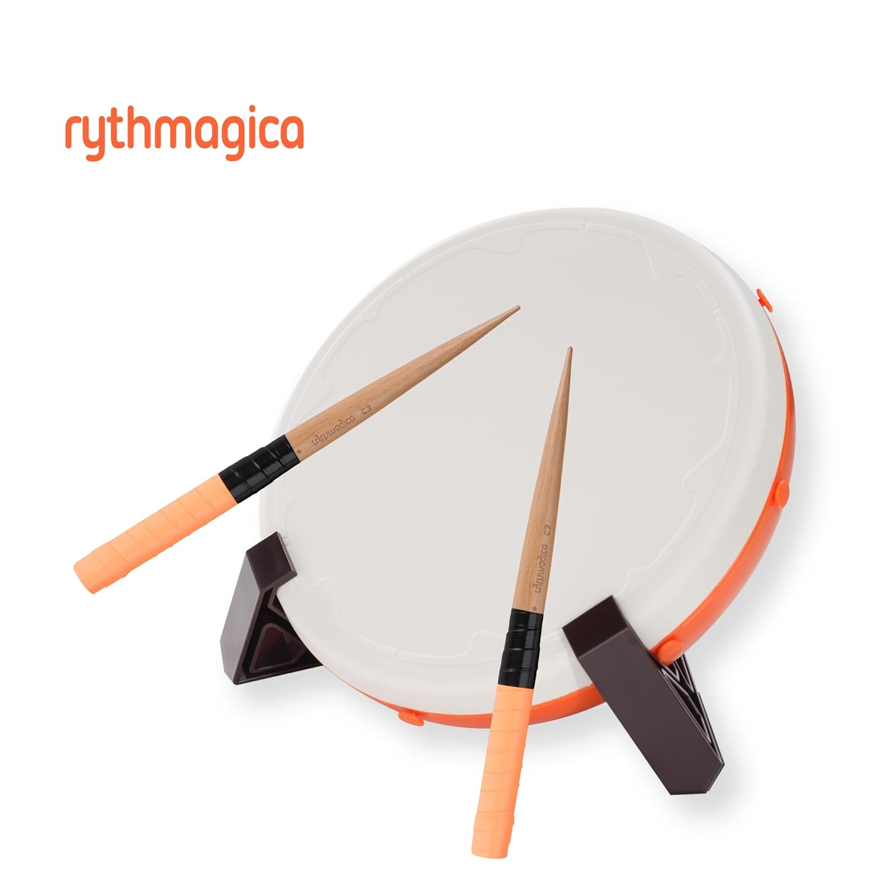
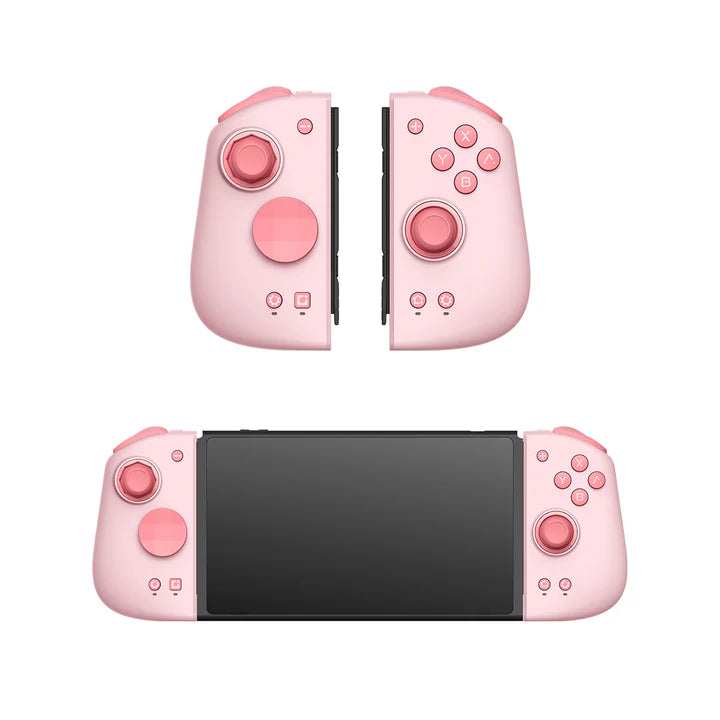

A webpage that shares some of my favorite video game controllers.
TDC Ten
Things I Like
Value; A lot of drum controllers for the taiko rhythm game are either lower priced but low quality or great but expensive. This serves as a decent mid point option.
Feel; It feels nice to play on and I like the bounce the drumsticks get when they hit the drum.
App; Has a compatible mobile app that allows you to customize settings for drum feel.

Mobapads MSix HD
Things I Like
Comfortable; The joycons aren't horrible, but after using these for a while I'm so used to them I can't go back...
Turbo button; I don't really use it but I find it interesting.
Pairs with other devices; I'm able to use it on my tablet with bluetooth, probably could use it on other things too, but I haven't tried yet.

DJ Station Pro
Things I Like
Cool Design; I just think that a turntable rhythm game controller is cool.
Getting into Beatmania; How I got into the Beatmania Franchise.
Headphone sliders; Has sliders for each side of your headphones, in case they aren't the same volume wise.